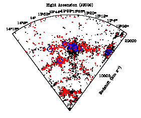

Shapley galaxy datasetThe CASt datasetShapley_galaxy.datAstronomical background The distribution of galaxies in space is strongly clustered. The Milky Way Galaxy resides in its Local Group which lies on the outskirts of the Virgo Cluster of galaxies, which in turn is part of the Local Supercluster. Similar structures of galaxies are seen at greater distances, and collectively the phenomenon is known as the Large Scale Structure (LSS) of the Universe. The clustering is hierarchical, nonlinear, and anisotropic. The latter property is manifested as galaxies concentrating in huge flattened, curved superclusters surrounding "voids", resembling a collection of soap bubbles. The basic characteristics of the LSS are now understood astrophysically as arising from the gravitational attraction of matter in the Universe expanding from the Big Bang ~14 billion years ago. The particular three-dimensional patterns are well-reproduced by simulations requiring that attractive Cold Dark Matter and repulsive Dark Energy are present in addition to attractive baryonic (ordinary) matter. The properties of baryonic and dark components needed to explain LSS agree very well with those needed to explain the fluctuations of the cosmic microwave background and other results from observational cosmology. Despite this fundamental understanding, there is considerable interest in understanding the details of galaxy clustering; e.g. the processes of collision and merging of rich galaxy clusters. The richest nearby supercluster of interacting galaxy clusters is called the Shapley Concentration. It includes several clusters from the Abell catalog of rich galaxy clusters seen in the optical band, and a complex and massive hot gaseous medium seen in the X-ray band. Optical measurement of galaxy redshifts provide crucial information but represent an uncertain convolution of the galaxy distance and gravitational effects of the clusters in which they reside. The distance effect comes from the universal expansion from the Big Bang, where the recessional velocity (galaxy redshift) follows Hubble's Law v=Hod, where v is the velocity in km/s, d is the galaxy distance from us in Mpc (million parsecs, 1 pc~3 light years), and Ho is Hubble's constant known to be about 72 km/s/Mpc. The cluster gravitational effects must be estimated or simulated for individual galaxies. Dataset Redshifts (i.e. velocities in km/s with respect to us) are now
measured
for 4215 galaxies in the Shapley Concentration regions (Drinkwater et al. 2004).
Below shows a plot of the redshifts as a function of right ascension, a
positional coordinate in the sky. 
The dataset has the following columns:
Statistical exercises
This dataset was generously made available by Michael Drinkwater, University of Queensland. |
    |